Conhecendo o Google Earth Engine¶
Este capítulo apresenta a plataforma que usaremos em toda a Parte 1: por que ela existe, como obter acesso, como é o ambiente de programação e quais conceitos de JavaScript são necessários para acompanhar os exemplos. Não é preciso saber programar — mas é preciso entender alguns poucos conceitos, que serão apresentados aos poucos e sempre ligados a dados geográficos.
☁️ Por que processar na nuvem?¶
Imagine que você precisa gerar um gráfico com a precipitação mensal dos últimos 10 anos em duas regiões — digamos, São Luís (MA) e Congonhas (MG). Existe um dado diário de precipitação para o mundo todo, o CHIRPS (Climate Hazards Group InfraRed Precipitation with Station data), com pixels de aproximadamente 5,5 km.
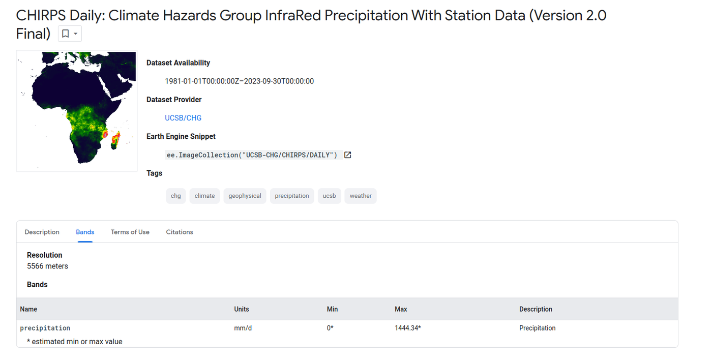
Quais seriam os passos para gerar esse gráfico em um computador local?
- Baixar as imagens diárias dos últimos 10 anos — aproximadamente 3.650 imagens;
- Recortar as 3.650 imagens para a região de estudo (para não processar o globo inteiro);
- Para cada ano e cada mês, somar as imagens diárias (cerca de 30 por mês), gerando 120 imagens mensais;
- Para cada uma das 120 imagens, calcular a precipitação média na região;
- Repetir os passos 3 e 4 para a outra região;
- Salvar as médias em um arquivo;
- Abrir o arquivo numa planilha e plotar o gráfico.
Mesmo com software livre, o gargalo é evidente: baixar, armazenar e processar milhares de imagens exige tempo, disco e poder computacional.
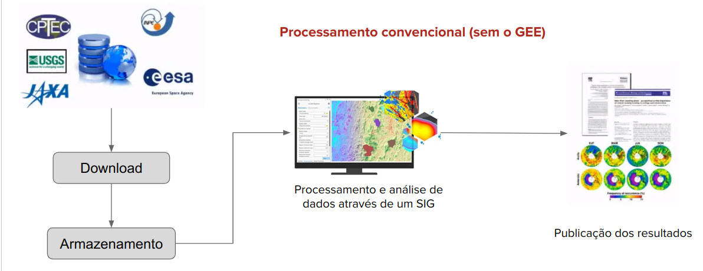
No Google Earth Engine (GEE), os dados já estão armazenados junto à infraestrutura de processamento. Enviamos apenas as instruções — o script — e recebemos o resultado: um mapa, um gráfico, uma tabela ou um arquivo exportado para o Google Drive.
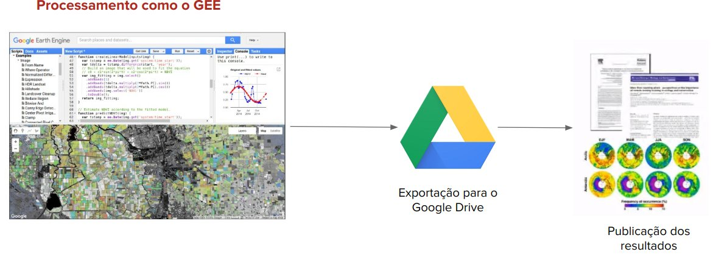
O script completo para o problema acima tem pouco mais de 50 linhas. Não se preocupe em entendê-lo agora: ao final da Parte 1 você será capaz de lê-lo linha por linha (ele é explicado em detalhe no Capítulo 8).
O algoritmo completo no Google Earth Engine (clique para expandir)
var congonhas = ee.Geometry.Polygon(
[[[-43.945697646520735, -20.44294631828056],
[-43.945697646520735, -20.579286674789692],
[-43.736957412145735, -20.579286674789692],
[-43.736957412145735, -20.44294631828056]]], null, false);
var saoluis = ee.Geometry.Polygon(
[[[-44.30663017068142, -2.4775511449329626],
[-44.30663017068142, -2.584563328792773],
[-44.15556815896267, -2.584563328792773],
[-44.15556815896267, -2.4775511449329626]]], null, false);
var areaEstudo = ee.FeatureCollection([
ee.Feature(congonhas, {nome: 'Congonhas'}),
ee.Feature(saoluis, {nome: 'Sao Luis'})
]);
var chirps = ee.ImageCollection('UCSB-CHG/CHIRPS/DAILY');
var anos = ee.List.sequence(2014, 2023);
var meses = ee.List.sequence(1, 12);
// Para cada ano e cada mês, soma as imagens diárias
var mensais = anos.map(function (y) {
return meses.map(function (m) {
var filtradas = chirps
.filter(ee.Filter.calendarRange(y, y, 'year'))
.filter(ee.Filter.calendarRange(m, m, 'month'));
var soma = filtradas.reduce(ee.Reducer.sum())
.rename('precipitacao_mensal');
return soma.set({
'system:time_start': ee.Date.fromYMD(y, m, 1).millis(),
'year': y,
'month': m
});
});
}).flatten();
var colecaoMensal = ee.ImageCollection.fromImages(mensais);
print('Coleção mensal', colecaoMensal);
// Série temporal da precipitação média em cada região
var grafico = ui.Chart.image.seriesByRegion({
imageCollection: colecaoMensal,
regions: areaEstudo,
reducer: ee.Reducer.mean(),
seriesProperty: 'nome',
xProperty: 'system:time_start',
scale: 5566
}).setOptions({
title: 'Precipitação mensal (mm)',
vAxis: {title: 'Precipitação (mm)'},
hAxis: {title: 'Meses'}
});
print(grafico);
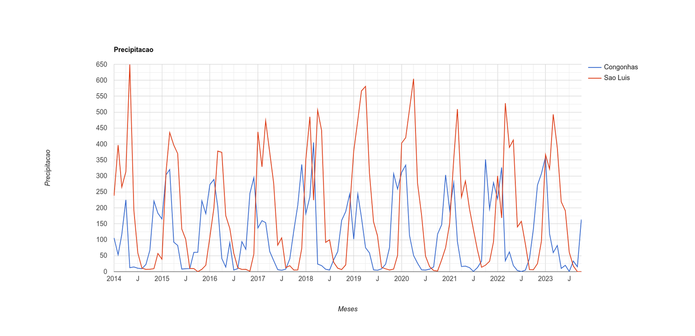
Observe no gráfico o regime de chuvas bem marcado de São Luís, concentrado no primeiro semestre, e o de Congonhas, concentrado no verão austral (de novembro a março). Uma análise que exigiria dias de download ficou pronta em segundos.
🌐 O que é o Google Earth Engine?¶
A plataforma Google Earth Engine é uma infraestrutura de processamento e análise de dados geoespaciais, concebida e mantida pelo Google, voltada a investigações científicas e análises geoespaciais em escala planetária (GORELICK et al., 2017). Ela combina três elementos:
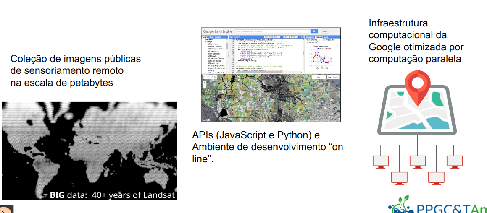
- Um catálogo público na escala de petabytes, com dados atuais e históricos das missões Landsat, Sentinel e MODIS, modelos digitais de elevação (SRTM), dados climáticos (CHIRPS, ERA5), mapas de uso e cobertura da terra e algumas coleções vetoriais. Isso permite monitorar alterações na superfície terrestre ao longo de décadas. O usuário também pode enviar seus próprios dados vetoriais e matriciais — por exemplo, imagens do CBERS, que não estão no catálogo.
- Uma infraestrutura computacional otimizada para processamento paralelo, que executa nos servidores do Google os algoritmos de processamento de dados matriciais e vetoriais — incluindo classificação de imagens —, livrando o usuário da aquisição e gestão de grandes volumes de dados.
- APIs em JavaScript e Python e um ambiente de desenvolvimento on-line, o Code Editor, com recursos de visualização interativa e de criação de painéis e aplicativos.
Entre as aplicações da plataforma estão o monitoramento ambiental, a gestão de recursos naturais, a agricultura de precisão e a detecção de desastres naturais. No Brasil, o exemplo mais conhecido é o MapBiomas, que produz no GEE as séries anuais de mapas de uso e cobertura da terra de todo o país.
Neste livro usaremos a API JavaScript, porque ela está disponível diretamente no navegador, pelo Code Editor, sem instalar nada. Quem preferir Python pode usar a biblioteca geemap em um notebook Jupyter ou no Google Colab; os conceitos são os mesmos.
🔑 Acessando o GEE pela primeira vez¶
Para usar o GEE é preciso uma conta Google e um projeto do Google Cloud registrado para uso não comercial (ensino e pesquisa). O processo é gratuito para esses usos.
Cotas de uso não comercial
Desde abril de 2026, todo projeto não comercial recebe uma cota mensal gratuita de processamento, medida em EECU-hours (unidades de computação do Earth Engine). O nível padrão, Community, é mais do que suficiente para todos os exercícios deste livro. Detalhes em Earth Engine Noncommercial Tiers. A verificação do uso não comercial precisa ser renovada anualmente.
Use o e-mail institucional
Usar a conta Google vinculada ao e-mail da universidade costuma agilizar a verificação de uso acadêmico.
Passo 1. Acesse code.earthengine.google.com. Na primeira vez, clique em "I want to register a new project".
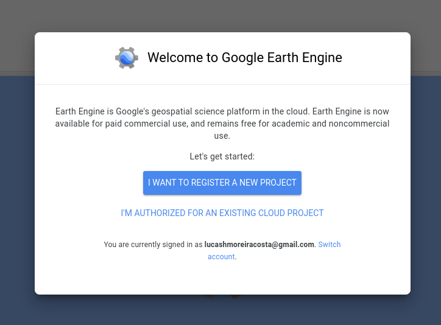
Passo 2. Escolha "Register a Noncommercial or Commercial Cloud project" e depois a opção de uso não comercial.
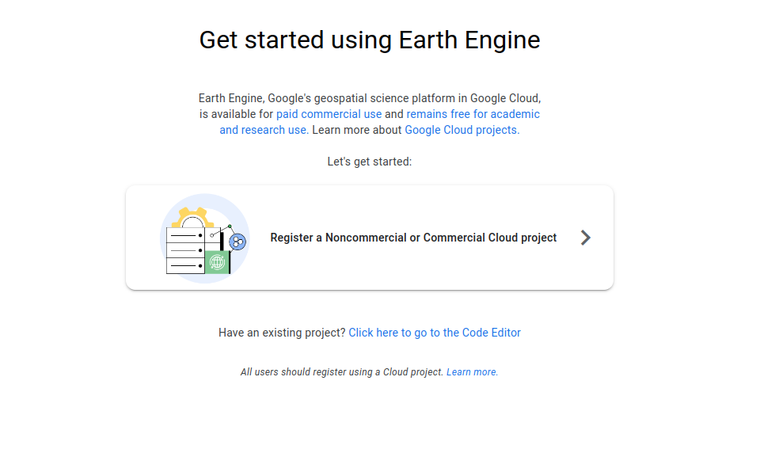
Passo 3. Indique "Unpaid usage" e o tipo de organização "Academia & research".
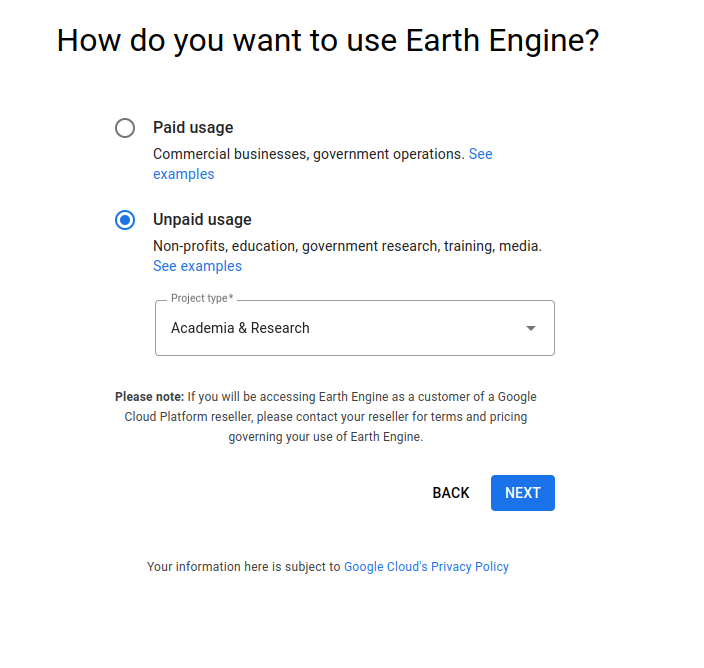
Passo 4. Escolha "Create a new Google Cloud project" e dê um identificador ao projeto (por exemplo, ee-seunome).
Passo 5. É provável que apareça uma mensagem pedindo que você aceite os termos do Google Cloud. Clique no link, aceite os termos e volte à página anterior.
Passo 6. De volta à tela de criação, conclua o cadastro do projeto e confirme as informações.
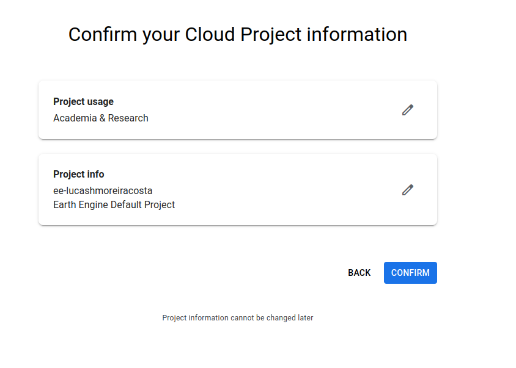
Passo 7. Ao final, você será direcionado ao Code Editor.
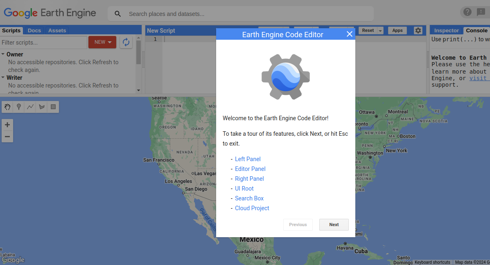
As telas mudam
O Google altera com frequência o fluxo de cadastro. Se alguma tela estiver diferente, a lógica continua a mesma: criar (ou escolher) um projeto do Google Cloud e registrá-lo para uso não comercial. Em caso de dúvida, consulte Earth Engine access.
Por fim, adicione ao seu Code Editor o repositório com os scripts de exemplo deste livro, clicando no link: users/sergiocosta/ercemapi2023.
🖥️ O Code Editor¶
O Code Editor, acessível em code.earthengine.google.com, é dividido em quatro áreas:
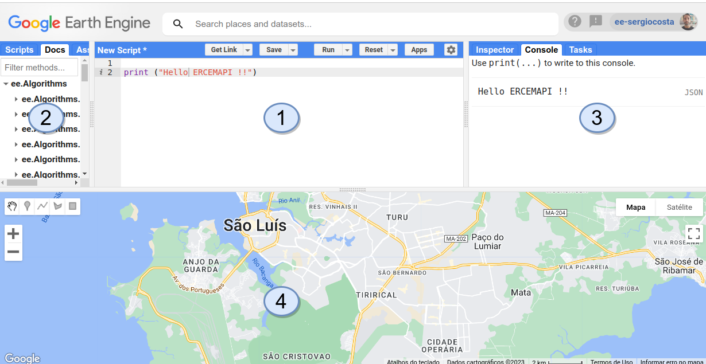
- Área de código (centro): onde os scripts são escritos para carregar, processar e visualizar dados. O editor realça a sintaxe e aponta erros. Os botões Run, Save e Get Link ficam no topo.
- Abas à esquerda: Scripts (seus arquivos, organizados em repositórios e pastas), Docs (documentação de todos os comandos) e Assets (seus dados vetoriais e matriciais enviados à plataforma).
- Abas à direita: Inspector (clique no mapa para ver os valores dos pixels e feições), Console (resultados de
printe gráficos) e Tasks (andamento das exportações e importações). - Área do mapa (abaixo): mapa interativo com o gerenciador de camadas (Layers), a alternância entre mapa e satélite e as ferramentas de desenho de geometrias.
Salve explicitamente os seus scripts
Diferente de outros ambientes on-line, o Code Editor não salva automaticamente. Clique em Save (ou Ctrl+S). Antes do primeiro script, crie um repositório em Scripts → NEW → Repository; dentro dele você pode criar pastas e arquivos. Para compartilhar um script com alguém (ou entregá-lo ao professor), use Get Link.
🧩 JavaScript no Google Earth Engine¶
A linguagem JavaScript foi criada por Brendan Eich em 1995, na Netscape, para tornar as páginas web mais interativas (WIRFS-BROCK; EICH, 2020). Desde então, deixou de estar restrita aos navegadores. Antes de ser escolhida para o Earth Engine, ela já era a linguagem de script do Google Docs e do Google Planilhas (o Google Apps Script).
Um script é uma sequência de comandos que o computador segue para realizar um processo — como uma receita culinária. Para escrevê-lo, é preciso conhecer as instruções individuais e saber combiná-las.
Instruções que causam efeitos¶
Algumas instruções apenas causam um efeito: imprimir algo no Console ou mover o mapa. Crie um script, copie o código a seguir e clique em Run:
// Duas instruções que apenas causam efeitos
print('Olá, Google Earth Engine!');
Map.setCenter(-37.77028535227355, -4.567792298842188, 13); // Aracati, CE
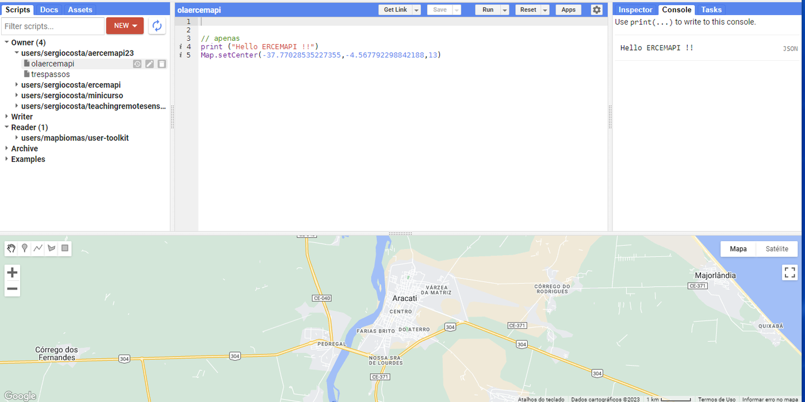
print escreve no Console; Map.setCenter(longitude, latitude, zoom) centraliza o mapa. Atenção à ordem: no GEE, as coordenadas são sempre longitude, latitude — o inverso do que muitas pessoas estão acostumadas.
Instruções que produzem valores: variáveis¶
Outras instruções produzem novos valores, seja buscando um dado no catálogo, seja processando valores criados antes. Por exemplo, ee.Image busca uma imagem a partir de seu identificador. Para usar esse valor depois, damos um nome a ele — ou seja, armazenamos o resultado em uma variável, com a palavra var:
Entrada, processamento e saída¶
Praticamente todo script no GEE segue três passos: seleção/entrada dos dados, processamento e apresentação/saída. As variáveis são o que liga um passo ao outro.
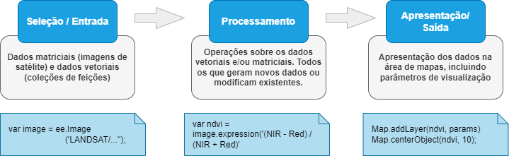
// SELEÇÃO/ENTRADA
// Esta operação produz um novo valor: um objeto do tipo imagem.
// Veremos o que são as imagens no próximo capítulo.
var image = ee.Image('LANDSAT/LC08/C02/T1_TOA/LC08_220062_20190504');
// PROCESSAMENTO
// Um índice de vegetação (NDVI), calculado a partir de duas bandas.
// Veremos índices em detalhe no Capítulo 8.
var ndvi = image.expression('(NIR - Red) / (NIR + Red)', {
'NIR': image.select('B5'), // banda do infravermelho próximo
'Red': image.select('B4') // banda do vermelho
});
// APRESENTAÇÃO/SAÍDA
Map.addLayer(ndvi, {min: -1, max: 1, palette: ['blue', 'white', 'green']}, 'NDVI');
Map.centerObject(image, 8);
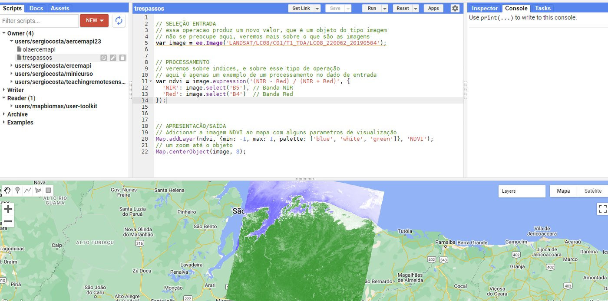
Agrupando valores com dicionários¶
Às vezes é útil agrupar vários valores sob um mesmo nome. Os metadados de uma imagem, por exemplo, poderiam ser representados assim:
var metadados = {
dataAquisicao: '2019-09-15',
resolucaoEspacial: 30,
sistemaCoordenadas: 'EPSG:4326'
};
print('Data de aquisição:', metadados.dataAquisicao);
print('Resolução espacial:', metadados.resolucaoEspacial);
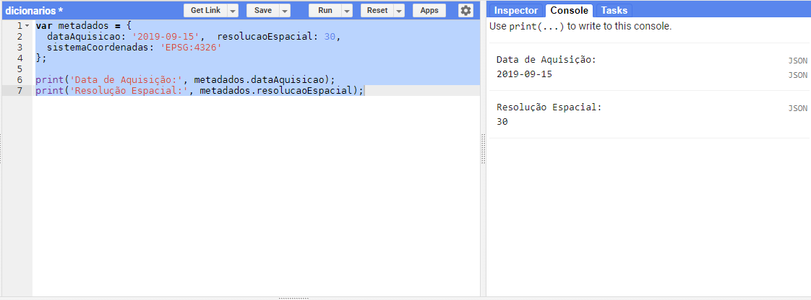
A variável metadados é um dicionário (ou objeto): um conjunto de pares chave: valor. Os dicionários são fundamentais no GEE: eles definem os atributos das feições (Capítulo 4) e os parâmetros de muitas instruções — como o {min: -1, max: 1, palette: [...]} que passamos a Map.addLayer no exemplo anterior.
Agrupando operações com funções¶
No exemplo do NDVI, o processamento coube em uma única instrução. Frequentemente, porém, ele exige várias instruções, que podem ser organizadas e encapsuladas em funções: dada uma entrada, a função a processa e retorna uma saída.
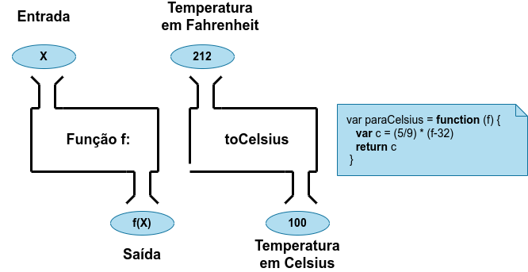
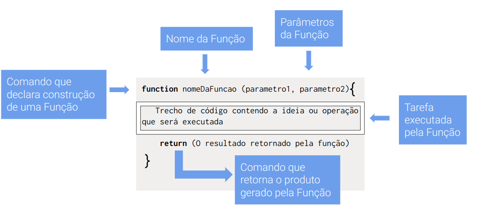
Uma função para converter graus Fahrenheit em Celsius:
// Definição da função
var paraCelsius = function (f) { // ENTRADA: f
var c = (5 / 9) * (f - 32); // PROCESSAMENTO
return c; // SAÍDA
};
// Uso da função, no mesmo script
var tempFahr = 212; // ENTRADA
var tempCelsius = paraCelsius(tempFahr); // PROCESSAMENTO
print(tempCelsius); // APRESENTAÇÃO: 100
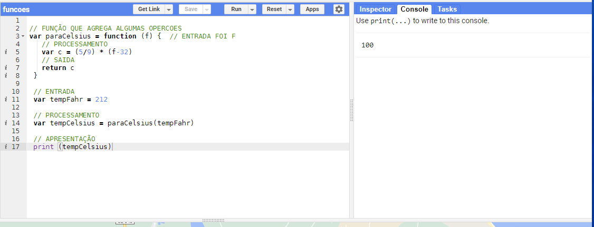
Funções serão essenciais a partir do Capítulo 7, quando aplicaremos uma mesma operação a todos os elementos de uma coleção.
⚖️ Cliente × servidor¶
Este é o conceito mais importante — e mais confuso — do GEE. No Code Editor convivem dois mundos:
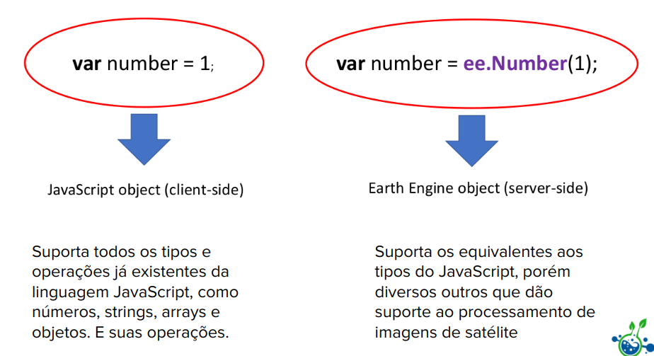
- O lado do cliente é o seu navegador. Ele entende o JavaScript "puro": números, textos (strings), arrays e objetos, com suas operações usuais (
+,*,>...). - O lado do servidor é a infraestrutura do Google. Tudo que começa com
ee.—ee.Number,ee.List,ee.Image,ee.FeatureCollection— é um objeto do servidor. Para usar a infraestrutura do Google, precisamos usar esses tipos e as operações (métodos) deles.
// Lado do cliente: JavaScript puro, calculado no navegador
var n1 = 10;
var n2 = 20;
var n3 = n1 * n2;
print(n3); // 200
// Lado do servidor: calculado na infraestrutura do Google
var num1 = ee.Number(10);
var num2 = ee.Number(20);
var num3 = num1.multiply(num2);
print(num3); // 200
Observe que, no servidor, não usamos o operador *, e sim o método .multiply(). A forma geral é objeto.metodo(argumentos). Os tipos do servidor têm equivalentes aos tipos do JavaScript e muitos outros voltados ao processamento de imagens de satélite. A aba Docs lista todos os métodos disponíveis para cada tipo — clique em um método para ver sua descrição.
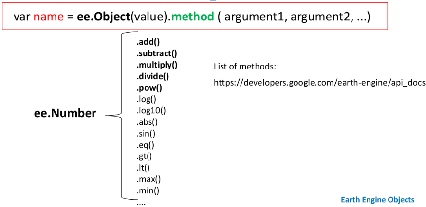
Não misture os dois mundos
Um objeto do servidor (ee.Number(10)) não é um número do JavaScript: ele é uma descrição de um cálculo que será feito no servidor. Por isso ee.Number(10) * 2 não funciona como esperado — use ee.Number(10).multiply(2). Da mesma forma, um if ou for do JavaScript não enxerga o valor de um objeto do servidor. Quando precisarmos repetir uma operação, usaremos o .map(), apresentado a seguir.
🔁 O padrão filter–map–reduce¶
O padrão filter–map–reduce é amplamente usado em aplicações que lidam com grandes volumes de dados — e é a forma natural de pensar no GEE (CARDILLE, 2022):
flowchart LR
A["Coleção<br/>de entrada"] -- ".filter()<br/>seleciona os elementos<br/>que interessam" --> B["Coleção<br/>filtrada"]
B -- ".map(f)<br/>aplica a função f<br/>a cada elemento" --> C["Coleção<br/>transformada"]
C -- ".reduce()<br/>combina tudo em<br/>um resultado" --> D["Resultado<br/>agregado"]- Filtrar (
.filter()): escolher um subconjunto de imagens ou feições com base em critérios espaciais, temporais, de atributos ou de metadados (Capítulos 5 e 6). - Mapear (
.map()): aplicar uma função a cada elemento da coleção filtrada, calculando ou transformando algo (Capítulos 7 e 8). - Reduzir (
.reduce()): combinar os elementos transformados em um resultado — uma média, uma soma, um desvio-padrão, uma imagem-síntese de uma série temporal.
Vamos entender o padrão primeiro com JavaScript puro, sem tipos do GEE.
filter cria uma nova coleção apenas com os elementos que passam em um teste:
var temperaturasF = [80, 86, 95, 56, 104, 50, 60];
var maior80 = function (x) {
return x > 80;
};
var filtrados = temperaturasF.filter(maior80);
print(filtrados); // [86, 95, 104]
map cria uma nova coleção aplicando uma função a cada elemento:
var paraCelsius = function (f) {
return (5 / 9) * (f - 32);
};
var temperaturasC = filtrados.map(paraCelsius);
print(temperaturasC); // [30, 35, 40]
reduce reduz a coleção a um único valor, acumulando o resultado de uma função:
var soma = function (acumulador, valorAtual) {
return acumulador + valorAtual;
};
var total = temperaturasC.reduce(soma, 0);
print(total); // 105
Quando os valores intermediários não interessam, encadeamos as operações:
var resultado = temperaturasF
.filter(maior80)
.map(paraCelsius)
.reduce(soma, 0);
print(resultado); // 105
O mesmo padrão, no cliente e no servidor¶
A seguir, o mesmo cálculo — filtrar os valores menores que 8, dobrá-los e somá-los — escrito nos dois mundos. Primeiro, apenas com JavaScript, do lado do cliente:
var valores = [10, 2, 3, 5]; // array do JavaScript
var resultado = valores
.filter(function (x) { return x < 8; })
.map(function (x) { return x * 2; })
.reduce(function (acc, x) { return acc + x; }, 0);
print(resultado); // 20
Agora com tipos e operações do GEE, do lado do servidor:
var valores = ee.List([10, 2, 3, 5]); // lista do servidor
var resultado = valores
.filter(ee.Filter.lt('item', 8))
.map(function (x) {
return ee.Number(x).multiply(2);
})
.reduce(ee.Reducer.sum());
print(resultado); // 20
Execute cada versão com o Profiler ligado (menu do botão Run → Run with profiler, ou Ctrl+Alt+Enter). Na versão do servidor, o Profiler lista as operações executadas na infraestrutura do Google:
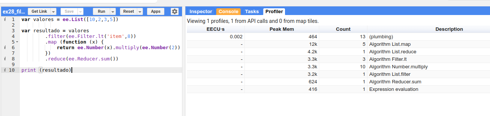
Na versão do cliente, nenhuma chamada ao servidor é registrada:
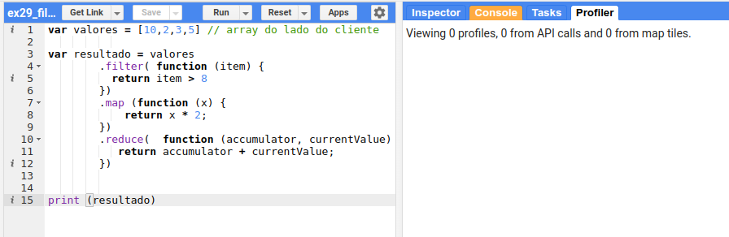
Por que isso importa?
As operações do servidor consomem a cota do seu projeto. Para cálculos pequenos, como estes, a diferença é irrelevante — mas entender onde cada operação roda ajuda a escrever scripts eficientes e a interpretar as mensagens de erro.
Resumo
O padrão filter–map–reduce permite selecionar os dados relevantes, aplicar operações específicas a cada um deles e, em seguida, reduzir os resultados para obter informações agregadas. Ele reaparecerá em quase todos os capítulos seguintes.
📝 Síntese¶
- O GEE une um catálogo de petabytes, uma infraestrutura de processamento paralelo e APIs (JavaScript e Python); os dados não precisam ser baixados.
- O acesso exige um projeto do Google Cloud registrado para uso não comercial.
- Scripts seguem a estrutura entrada → processamento → saída; variáveis, dicionários e funções organizam o código.
- Objetos
ee.*vivem no servidor e são manipulados por métodos; o padrão filter–map–reduce organiza o processamento de coleções.
✏️ Exercícios¶
- Crie um repositório no seu Code Editor e salve nele um script que centralize o mapa na sua cidade com zoom 12. Gere o link com Get Link.
- Escreva uma função
paraFahrenheitque faça a conversão inversa daparaCelsius. Teste-a com 0 e 100. - Crie um dicionário com os metadados de uma imagem fictícia (satélite, data, cobertura de nuvens) e imprima cada valor.
- Reescreva o exemplo das temperaturas do lado do servidor, usando
ee.List,ee.Filter.gt,.mapcomee.Numbereee.Reducer.sum(). Compare os resultados no Profiler. - Explique, com suas palavras, por que
ee.Number(5) + 3não produz 8.